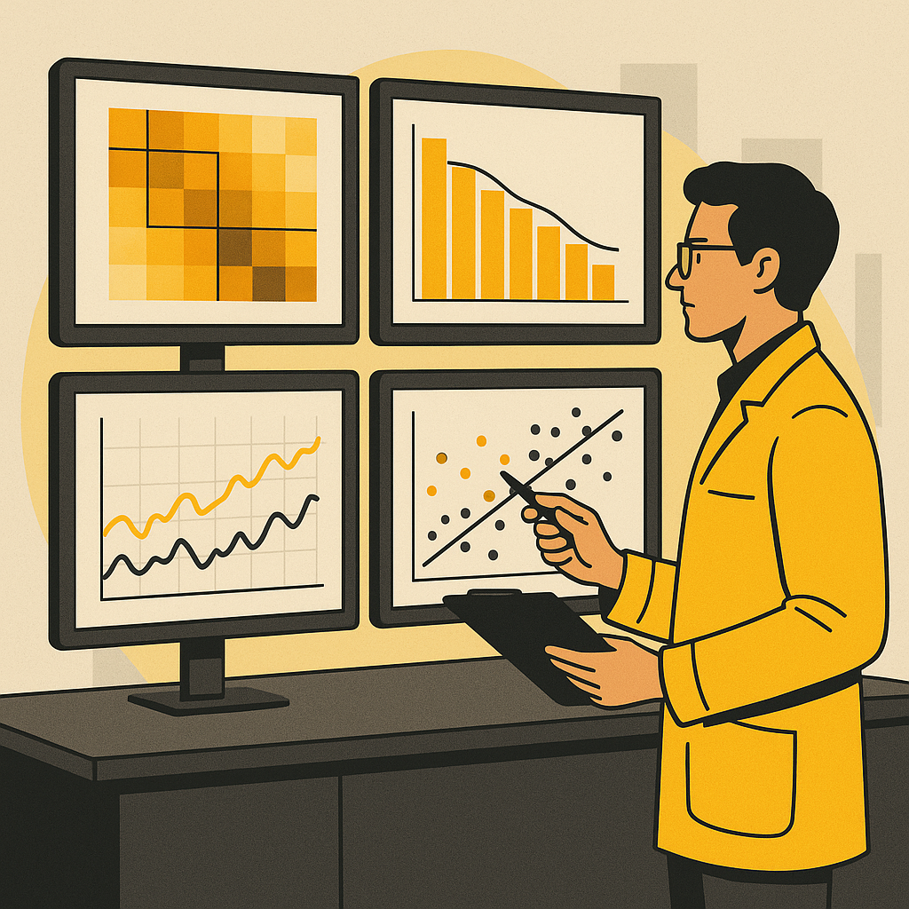

프로젝트 2 — 시각화 + 통계 분석으로 인사이트 찾기Project 2 — Visualization + Statistical Analysis for Insights
OLED deposition 공정 데이터를 읽고 그래프와 통계 분석으로 공정 인사이트를 찾은 뒤 HTML 보고서로 문서화하는 프로젝트입니다. 중급에서는 그래프를 보고 끝내지 않고, 결함 우선순위와 통계적으로 유의한 원인 후보를 찾습니다.Read OLED deposition data, discover insights via charts & statistics, then document as HTML. At intermediate level, go beyond viewing charts to find defect priorities and statistically significant root-cause candidates.
P1 → P2 성장: P1이 "CSV 읽기 → 기본 통계 → 차트"였다면, P2는 "CSV 읽기 → 최적 시각화 선택 → 통계 검증 → HTML 보고서 작성"입니다.P1 → P2 Growth: If P1 was "CSV → stats → chart," P2 is "CSV → optimal chart selection → statistical validation → HTML report."
oled_deposition_xymap.csv — 4개 panel, 96×64 좌표, 총 24,576행의 확장 OLED deposition 합성 데이터oled_deposition_xymap.csv — Extended synthetic OLED deposition data: 4 panels, 96×64 coords, 24,576 rows
| 컬럼Column | 의미Description | 활용 예Usage |
|---|---|---|
| panel_id, x_index, y_index | panel과 x/y 좌표Panel & x/y coords | x/y map, heatmap |
| chamber, zone | 증착 chamber와 영역Deposition chamber & zone | chamber별 boxplotBoxplot by chamber |
| source_temp_c, substrate_temp_c | 공정 온도Process temperature | 산점도, 회귀분석Scatter, regression |
| pressure_mTorr, oxygen_flow_sccm | 압력/가스 조건Pressure/gas conditions | 상관관계, 회귀분석Correlation, regression |
| thickness_nm, thickness_error_nm | 목표 두께 대비 편차Thickness deviation | boxplot, heatmap |
| particle_count, dark_spot_count | 결함 측정값Defect measurements | Pareto, 원인 후보Pareto, root cause |
| defect_type, pass_fail | 결함 유형/판정Defect type/judgment | Pareto chart |
| yield_score | 좌표 단위 품질 점수Quality score per coord | scatter, regression |
CSV를 pandas로 로드하고, .info(), .describe(), 결측치 확인으로 데이터 구조를 파악합니다.Load CSV with pandas, check structure with .info(), .describe(), and missing-value analysis.
statsmodels OLS로 yield_score 회귀분석을 수행합니다. p-value가 0.05 미만인 변수를 "유의한 인자"로 표시합니다.Run OLS regression on yield_score using statsmodels. Mark variables with p-value < 0.05 as "significant factors."
각 그래프와 통계 결과에서 공정 엔지니어 관점의 해석을 작성합니다. 개선 제안을 3개 이상 포함합니다.Write process-engineer perspective interpretations for each chart and statistical result. Include 3+ improvement suggestions.
그래프, 해석, 통계 결과, 개선 제안을 하나의 HTML 보고서에 정리합니다.Compile charts, interpretations, statistical results, and improvement suggestions into one HTML report.
분석 과정에서 사용한 Gemini 프롬프트를 기록으로 남깁니다.Record all Gemini prompts used during analysis.
| 항목Category | 세부 기준Details | 배점Pts |
|---|---|---|
| 데이터 처리와 재현성Data Processing & Reproducibility | CSV 로드, 결측치 처리, 코드 실행 가능CSV loaded, missing values handled, code runnable | 25 |
| 시각화 완성도Visualization Quality | 5종 이상 그래프, Pareto chart 필수 포함5+ chart types, Pareto chart required | 25 |
| 통계 분석과 해석Statistical Analysis & Interpretation | 상관분석/회귀분석 포함, p-value 또는 상관계수 해석Correlation/regression included, p-value or correlation interpreted | 25 |
| 보고서 문서화Report Documentation | HTML 보고서에 인사이트와 개선 제안 포함HTML report includes insights and improvement suggestions | 25 |
analysis.pyreport.htmlreport.html with statistical resultspivot_table로 x/y 평균값을 만든 뒤 그리세요. panel 하나만 먼저 분석하세요.Create x/y averages with pivot_table first. Start with one panel.
결측치와 문자열 컬럼이 모델에 들어갔는지 확인하세요. 독립변수끼리 강한 상관이면 회귀계수가 불안정합니다.Check if missing values or string columns entered the model. Highly correlated independent variables can make coefficients unstable.
A. Gemini에게 "p-value를 공정 엔지니어가 이해할 수 있게 해석해줘"라고 요청하세요. 단, AI 답변을 그대로 믿지 말고 그래프와 도메인 상식으로 다시 확인하세요.A. Ask Gemini to "explain p-value so a process engineer can understand." But don't blindly trust the AI — verify with charts and domain knowledge.
A. 그래프 개수보다 "왜 이 그래프를 선택했고 무엇을 알게 되었는지"가 더 중요합니다.A. "Why you chose this chart and what you learned" matters more than count.
A. 공개 저장소에는 절대 올리면 안 됩니다. 제공된 합성 CSV만 사용하세요.A. Never upload to public repos. Use only the provided synthetic CSV.
필수 제출물:
제출 방식 (택 1):
💡 영상에서 "이 그래프에서 이런 패턴을 발견했고, 원인은 ~로 추정됩니다"처럼 해석을 말해주세요